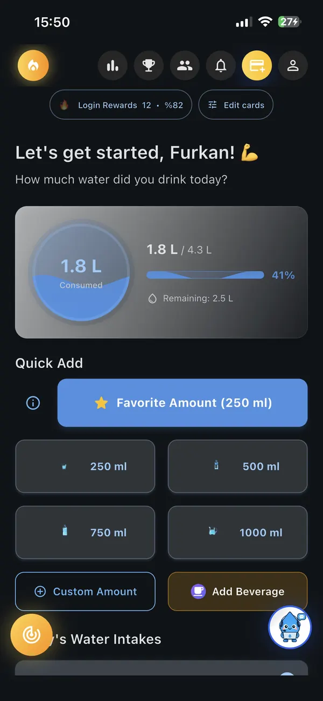
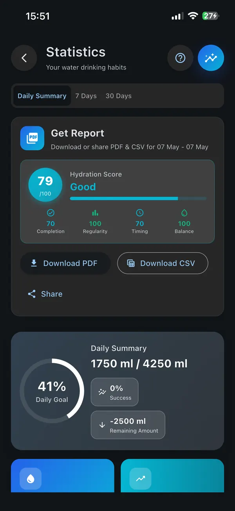
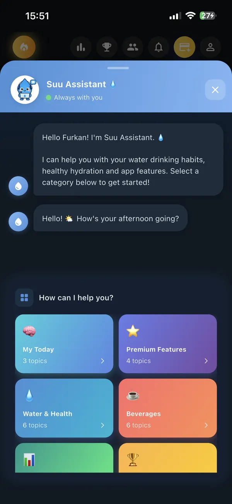
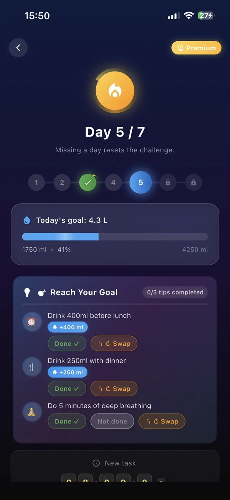
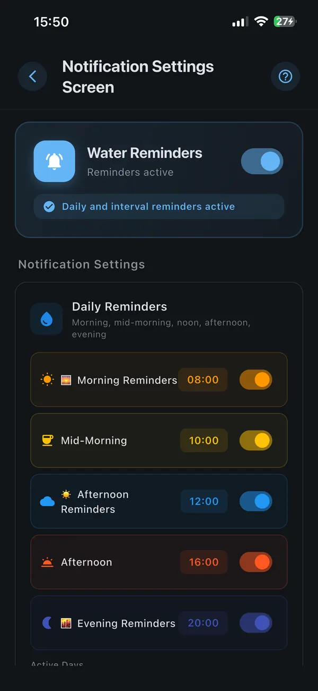

Beautiful, Simple Interface
Clean design focused on one thing: helping you drink more water, effortlessly.






Log meals by voice, snap a photo for calories; let AI calculate your macros, calories and hydration in seconds, synced with Apple Health — 3 free analyses a day.
Suu no longer just tracks water. Log meals by voice, snap a photo for calories; let AI calculate your macros, calories and hydration in seconds and write them to Apple Health.
Say "a bowl of lentil soup and half a glass of ayran." Suu automatically separates solids from liquids — soup goes to hydration, lentils go to macros.
Take a photo of your plate. AI recognizes the food, estimates the portion and extracts calories + macros in seconds.
Calories, protein, carbs, fat and sodium are written automatically to Apple Health / Health Connect. See your 1–100 nutrition score instantly.
You don't have to type your meal. Just speak — AI parses every food and drink in your sentence and automatically separates solids from liquids. Soup to hydration, rice to macros — in one sentence.
The future of nutrition tracking. Snap your plate — Suu recognizes the food, estimates the portion and extracts calories + macros. No journaling, no barcode hunting — one photo is enough.
An assistant that listens to your biological rhythm. Based on a 1–100 nutrition score after each meal, it nudges water at the right moment for digestion, and reminds you of that first morning sip against overnight dehydration. Not static alarms — dynamic nudges that follow your rhythm.
Activity-based goals, caffeine & sugar analytics, hydration score, and AI coaching. Suu adapts to your lifestyle — whether you're an athlete, office worker, or just starting out.
Set your water goal based on your weight, activity level, and climate. Suu adjusts as your lifestyle changes.
Notifications based on real progress: "You're at 32% of your goal — time to drink!" Not a fixed timer. Fewer, smarter nudges that actually work.
Add friends by username or QR code. View their progress and daily goals. Create a weekly league with up to 4 friends — cross-platform iOS + Android. Send "let's drink together" nudge notifications. No rival app has anything like this.
Coffee, tea, juice, soda — each with a scientifically-calculated dehydration factor. Starbucks, Nevada, Greenwich and other popular coffee chains have their own dedicated section: pick your exact drink, log it, and instantly see how much extra water you need to compensate. Caffeine and sugar info included.
+300 ml automatically added during pregnancy, +700 ml during breastfeeding. Trimester-based calculation, mother-specific daily targets. The only water tracking app with this feature.
Daily hydration score, weekly trends, monthly breakdowns — exportable as PDF or CSV. Share with your doctor or dietitian.
Track progress from your lock screen widget or Dynamic Island — log a drink without even unlocking your phone.
Full two-way sync with Apple HealthKit and Google Health Connect. Suu reads your step count and active calories to dynamically adjust your daily goal. Water logged in Suu appears in your Apple or Google Health dashboard automatically.
Standalone SwiftUI watchOS app — log water right from your wrist without touching your phone. Progress ring shows your daily goal at a glance. Real-time sync via App Group. No other water tracker has a standalone Apple Watch experience like Suu.
Add water hands-free with Siri Shortcuts. Set custom commands like "log a coffee" or "add 500ml water." Built-in voice recognition also works on Android — no Siri required. Assign a custom trigger word to any beverage and log it instantly.
Earn badges for daily goal completions, unlock streak rewards at 7, 30, and 100 days, and take on individual hydration challenges. Science shows gamification increases long-term habit adherence — Suu makes drinking water actually fun.
Suu connects to OpenWeatherMap to pull your city's real-time temperature and humidity. On hot or humid days it automatically raises your daily goal — the only water tracker smart enough to account for your local weather conditions.
Walking, running, swimming, cycling, fitness — Suu reads your activities from Apple Health and Google Fit and automatically increases your daily water goal based on the type, duration and intensity of your workout. ~+400 ml after a 30-min run, ~+600 ml after an hour of swimming. Real, science-backed adjustments.
Suu doesn't just track water — it calculates the caffeine (mg) and sugar (g) in every drink you log. Get smart warnings when you approach the FDA daily caffeine limit (400 mg) or the WHO added-sugar threshold (25 g). A Starbucks Latte? +150 mg caffeine, +14 g sugar. A complete health dashboard.
Suu is now far more than a water app: a personal hydration coach, activity-aware suggestions, beverage analytics, and caffeine/sugar warnings — a full health assistant in your pocket. Hourly contextual messages and weekly personal reports.
Suu's in-app assistant now chats with real AI — it doesn't just answer questions, it acts for you. Say "log 2 glasses of water" and it records it instantly. Ask "how much have I had today?" and it summarizes your stats. It navigates you to the right screen (stats, goal, beverages), sets reminders, gives personal coaching from your profile, and nudges you step by step toward your daily goal. Just talk in natural language — Suu handles the rest.
USD, EUR, Turkish Lira, Saudi Riyal, UAE Dirham, Kuwaiti Dinar, Qatari Riyal — view Premium pricing in your local currency. Launch price: $30 / ≈€28 / ≈₺1.200 / ≈112 SAR / ≈9.2 KWD per year.
Clean design focused on one thing: helping you drink more water, effortlessly.





Suu users across the world track millions of glasses every day.
Science-backed articles to help you understand why staying hydrated matters.
Join thousands of users who track their water intake daily with Suu — free, no ads, no subscription required.